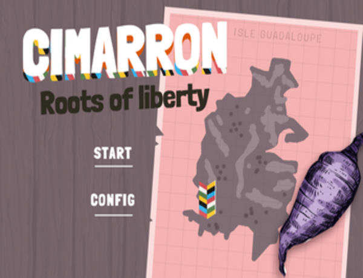
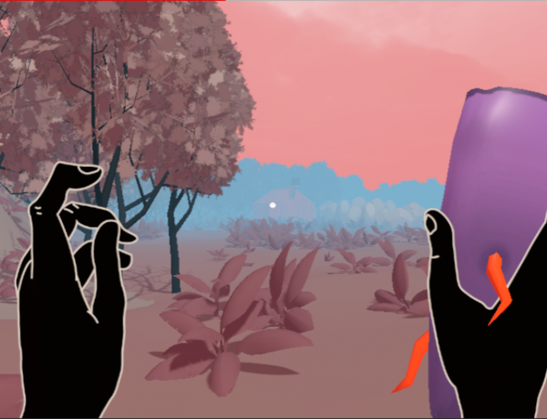
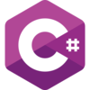

Cimarron (Global Game Jam 2023)


On an island plantation in the Spanish Antilles in the 19th century, a magical yucca will be the tool for Cimarrón (a fugitive slave) to find his freedom.
You can try it here
My Role
This game was made during the Global Game Jam 2023 event, I participated mainly as a programmer using Unity and C#, I also helped generating the music with the help of AI using beatoven.ai
Technologies used/Skills
